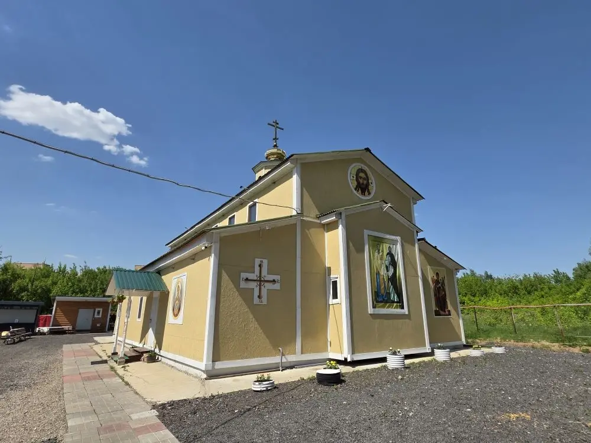

| Четверг1 мая |
Прп. Иоанна Солунского
8:40Часы. Литургия. Молебен
17:00Вечернее богослужение
|
| Пятница2 мая |
Блж. Матроны Московской
8:40Часы. Литургия. Панихида
17:00Исповедь. Всенощное бдение
|
| Воскресенье3 мая |
Неделя 4-я по Пасхе, о расслабленном
Прп. Феодора Трихины
8:00Водосвятный молебен
8:40Часы. Литургия
17:00Молебен с акафистом свв. Кириллу и Мефодию
|
| Вторник5 мая |
Прп. Феодора Сикеота
17:00Исповедь. Вечернее богослужение (Полиелей)
|
| Среда6 мая |
Вмч. Георгия Победоносца
8:40Часы. Литургия. Молебен
17:00Исповедь. Вечернее богослужение
|
| Четверг7 мая |
Мч. Саввы Стратилата
8:40Часы. Литургия. Заупокойная лития
17:00Вечернее богослужение
|
| Пятница8 мая |
Апостола и евангелиста Марка
8:40Часы. Литургия. Молебен
17:00Вечернее богослужение
|
| Суббота9 мая |
Свт. Стефана, еп. Великопермского
8:40Часы. Литургия. Панихида
17:00Исповедь. Всенощное бдение
|
| Воскресенье10 мая |
Неделя 5-я по Пасхе, о самаряныне
Ап. от 70-ти сщмч. Симеона Иерусалимского
8:00Водосвятный молебен
8:40Часы. Литургия
17:00Молебен с акафистом свв. Кириллу и Мефодию
|
| Вторник12 мая |
Девяти мучеников Кизических
17:00Исповедь. Вечернее богослужение
|
| Среда13 мая |
Отдание Преполовения. Ап. Иакова Зеведеева
8:40Часы. Литургия. Молебен
17:00Вечернее богослужение (Полиелей)
|
| Четверг14 мая |
Прор. Иеремии. Икона Б.М. «Нечаянная радость»
8:40Часы. Литургия. Заупокойная лития
17:00Вечернее богослужение
|
| Пятница15 мая |
Свт. Афанасия Великого. Перенесение мощей кнн. Бориса и Глеба
8:40Часы. Литургия. Молебен
17:00Исповедь. Вечернее богослужение (Полиелей)
|
| Суббота16 мая |
Прп. Феодосия, игумена Киево-Печерского
8:40Часы. Литургия. Панихида
17:00Исповедь. Всенощное бдение (Полиелей)
|
| Воскресенье17 мая |
Неделя 6-я по Пасхе, о слепом
Мц. Пелагии Тарсийской
8:00Водосвятный молебен
8:40Часы. Литургия
17:00Молебен с акафистом свв. Кириллу и Мефодию
|
| Вторник19 мая |
Прав. Иова Многострадального
17:00Исповедь. Вечернее богослужение (Пасхальным чином)
|
| Среда20 мая |
Отдание праздника Пасхи. Крестный ход
8:40Часы. Литургия. Крестный ход
17:00Исповедь. Всенощное бдение
|
| Четверг21 мая |
✦ ВОЗНЕСЕНИЕ ГОСПОДНЕ ✦
Апостола и евангелиста Иоанна Богослова
8:40Часы. Литургия
17:00Исповедь. Всенощное бдение
|
| Пятница22 мая |
Перенесение мощей свт. Николая из Мир Ликийских в Бар
8:40Часы. Литургия
17:00Вечернее богослужение
|
| Суббота23 мая |
Попразднство Вознесения. Ап. Симона Зилота
8:40Часы. Литургия. Панихида
15:30Молебен с акафистом свв. Кириллу и Мефодию
17:00Исповедь. Всенощное бдение
|
| Воскресенье24 мая |
✦ ПРЕСТОЛЬНЫЙ ПРАЗДНИК ✦
Свв. равноапп. Мефодия и Кирилла, учителей Словенских
8:00Водосвятный молебен
8:40Часы. Литургия. Крестный ход
|
| Вторник26 мая |
Мц. Гликерии девы
17:00Исповедь. Вечернее богослужение
|
| Среда27 мая |
Мч. Исидора Хиосского
8:40Часы. Литургия. Молебен
|
| Четверг29 мая |
Отдание Вознесения. Прп. Феодора Освященного
17:00Исповедь. Вечернее богослужение
|
| Суббота30 мая |
Троицкая родительская суббота
Поминовение усопших. Ап. от 70-ти Андроника
8:40Часы. Литургия. Панихида
17:00Исповедь. Всенощное бдение
|
| Воскресенье31 мая |
✦ ДЕНЬ СВЯТОЙ ТРОИЦЫ ✦
Пятидесятница
8:40Часы. Литургия. Вечерня
17:00Всенощное бдение
|